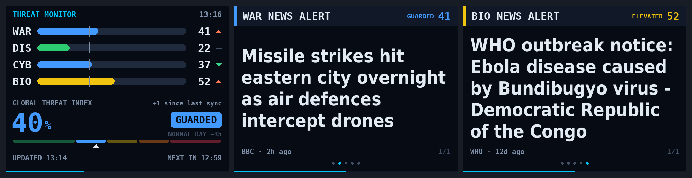

Conflict
How much of the world's general news is about armed conflict, missile strikes and military escalation.
Free · Open source · v1.3.2
Threat Monitor is a free screensaver for Windows, macOS and Raspberry Pi that reads live news and official alert feeds and scores four kinds of threat: war, natural disasters, cyber attacks and disease outbreaks. Glance up and you know how loud the world is today.
Windows 10 and 11 · macOS 12 Monterey or later (Apple silicon and Intel) · Raspberry Pi OS and Debian Linux. No account, no sign-up.
Every few minutes Threat Monitor checks trusted public sources, scores each category from 0 to 100, and shows the latest headline behind each score in plain English, with the source and how long ago it was published. Stories that only borrow war words, like video games, films, sport or wildlife, are filtered out, so the WAR screen stays on real conflict news.
How much of the world's general news is about armed conflict, missile strikes and military escalation.
Earthquakes, tropical cyclones, floods and volcanoes from official GDACS alert levels, with USGS as a backup. Alerts are explained in plain words, like “Typhoon In-Fa near the Marshall Islands, winds up to 241 km/h, low risk”.
Breaches, ransomware and actively exploited vulnerabilities, including the US CISA catalog.
Disease outbreaks and public-health emergencies, including World Health Organization notices.

WAR, CYB and BIO compare today's coverage with each source's own usual level over the last 30 days, so an ordinary day reads about 35. Twice the usual coverage reads about 58, three times about 73. DIS follows official alert levels: routine green alerts count a little, orange and red alerts count fully. The Global Threat Index combines all four and gives more weight to whichever is highest.
An honest note: the index measures how much is being reported, not real-world danger. Think of it as a news-intensity gauge for your desk, not a forecast.
All three versions are free and always point to the newest release. The Windows and macOS screensavers need nothing else installed.
curl -fsSL https://raw.githubusercontent.com/kuydigital/threat_monitor/main/linux/install.sh | sudo bashPrefer to read the code first? Everything, including the build scripts and tests, is on GitHub under the MIT License. It also runs in a window on any desktop with Python, and fits a tiny 320×240 Raspberry Pi screen.
Threat Monitor reads public feeds directly. Headlines belong to their publishers and are always shown with their source.
Yes. All three versions (Windows, macOS and Raspberry Pi OS) are free and open source under the MIT License. There is no account, subscription or sign-up.
No. It measures how much the news is reporting on each kind of threat compared with the usual level over the last 30 days. Treat it as a news-intensity indicator, not a forecast of real-world danger.
Public RSS feeds from BBC News, Al Jazeera, NPR and Google News, GDACS disaster alerts, the USGS earthquake feed, the CISA Known Exploited Vulnerabilities catalog and WHO Disease Outbreak News.
Windows shows that message for downloaded programs that are not signed by a company. Click More info, then Run anyway. The full source code is public on GitHub.
No. The Windows and macOS screensavers are self-contained. The Raspberry Pi OS installer adds the few packages it needs automatically.
Yes. It was designed to fit a 320×240 display and also runs full screen, in a window, or as a Raspberry Pi OS screensaver that appears after 5 idle minutes.